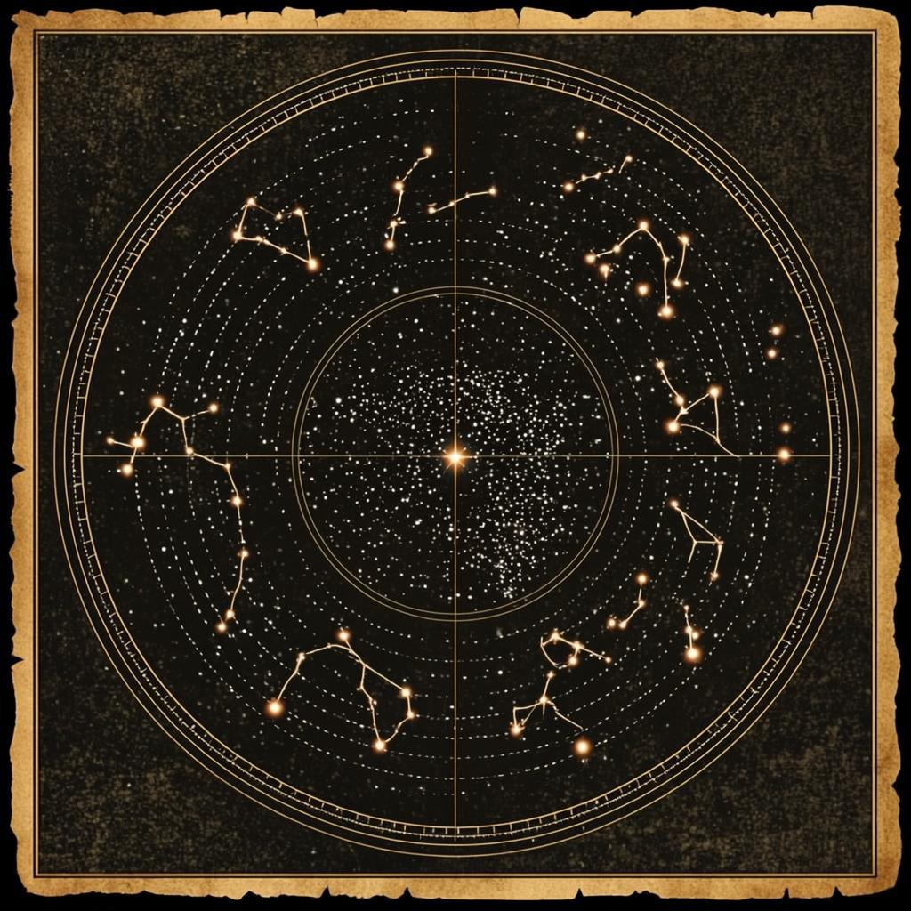

THE LEARNING ROOM / SIX MODULES
Build a picture
of the universe.
Start with the tools and history of astronomy, then travel through planets, stars, galaxies and space missions.
Start learning ↓
OBSERVATIONSTHROUGH TIMEFIELD GUIDE · 06 MODULES
01 / THE COURSE
Choose a module
Short, expandable lessons with clear takeaways. Follow the sequence or jump to a subject.
02 / YOUR TURN
Check your understanding
Order ideas, connect concepts, and use evidence from the modules. Every prompt is based on what you learned above.
JUST A SIGNAL